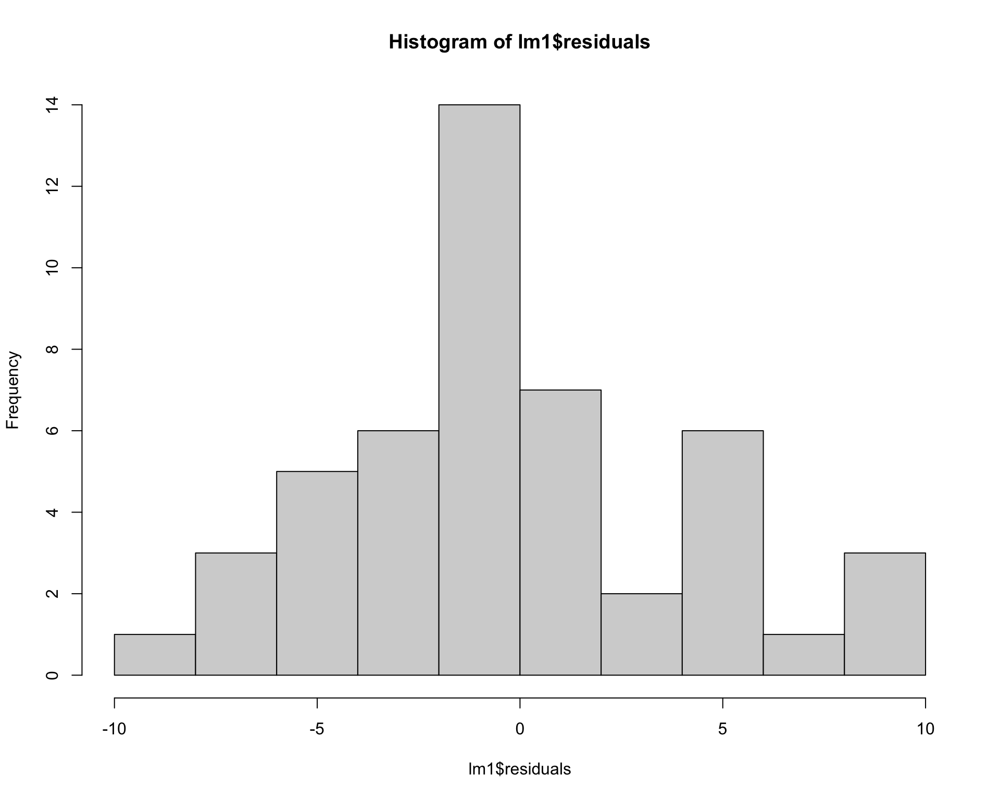
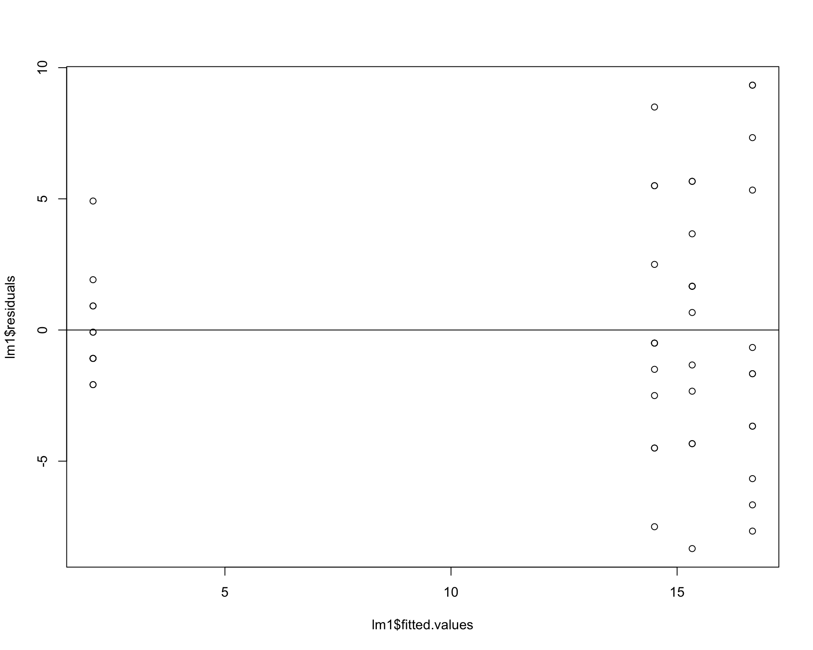

Chapter 5 Example of a one-way ANOVA in R
For this section we will use the insect spray dataset
data("InsectSprays")
head(InsectSprays)## count spray
## 1 10 A
## 2 7 A
## 3 20 A
## 4 14 A
## 5 14 A
## 6 12 ALet’s filter to just 4 treatments.
d <- InsectSprays %>% filter(spray=='A'|spray=='B'|spray=='C'|spray=='F') %>%
droplevels()Now plot the data.
ggplot(d, aes(x=spray,y=count)) +
geom_boxplot(outlier.shape = NA) + # need to suppress outliers if you jitter plot points
geom_jitter(height=0,width=.1) 
Let’s construct linear model to examine the effect of the different sprays on insect counts. For a categorical variable (spray with four levels), we are interested in comparing group means.
lm1 <- lm(count~spray, data=d) To compare group means we can use the Anova().
Anova(lm1, type=2) ## Anova Table (Type II tests)
##
## Response: count
## Sum Sq Df F value Pr(>F)
## spray 1648.73 3 26.478 6.091e-10 ***
## Residuals 913.25 44
## ---
## Signif. codes: 0 '***' 0.001 '**' 0.01 '*' 0.05 '.' 0.1 ' ' 1In the above case, the null hypothesis that all group means are equal. Specifying the argument, “type =,” to 2 provides Type II sums of squares, which is usually better than the default Type I, especially for more complicated models. Other functions (anova(), aov(), etc.) will provide similar ANOVA tables, but the Anova() is more flexible.
Let’s look at the summary of the model.
summary(lm1)##
## Call:
## lm(formula = count ~ spray, data = d)
##
## Residuals:
## Min 1Q Median 3Q Max
## -8.3333 -2.3750 -0.5833 2.0625 9.3333
##
## Coefficients:
## Estimate Std. Error t value Pr(>|t|)
## (Intercept) 14.5000 1.3152 11.025 3.02e-14 ***
## sprayB 0.8333 1.8599 0.448 0.656
## sprayC -12.4167 1.8599 -6.676 3.42e-08 ***
## sprayF 2.1667 1.8599 1.165 0.250
## ---
## Signif. codes: 0 '***' 0.001 '**' 0.01 '*' 0.05 '.' 0.1 ' ' 1
##
## Residual standard error: 4.556 on 44 degrees of freedom
## Multiple R-squared: 0.6435, Adjusted R-squared: 0.6192
## F-statistic: 26.48 on 3 and 44 DF, p-value: 6.091e-10Rebuilding the model from the coefficients is not super helpful and the p-values aren’t very meaningful.
Let’s use the package emmeans and the function emmeans which will rebuild the model for you. It will print off the means, SE, and confidence intervals for each treatment group
emmeans(lm1, ~spray) ## spray emmean SE df lower.CL upper.CL
## A 14.50 1.32 44 11.849 17.15
## B 15.33 1.32 44 12.683 17.98
## C 2.08 1.32 44 -0.567 4.73
## F 16.67 1.32 44 14.016 19.32
##
## Confidence level used: 0.95We can also look at pairwise differences between groups and automatically adjust p-values using “tukey” adjust.
emmeans(lm1, pairwise~spray) ## $emmeans
## spray emmean SE df lower.CL upper.CL
## A 14.50 1.32 44 11.849 17.15
## B 15.33 1.32 44 12.683 17.98
## C 2.08 1.32 44 -0.567 4.73
## F 16.67 1.32 44 14.016 19.32
##
## Confidence level used: 0.95
##
## $contrasts
## contrast estimate SE df t.ratio p.value
## A - B -0.833 1.86 44 -0.448 0.9697
## A - C 12.417 1.86 44 6.676 <.0001
## A - F -2.167 1.86 44 -1.165 0.6518
## B - C 13.250 1.86 44 7.124 <.0001
## B - F -1.333 1.86 44 -0.717 0.8899
## C - F -14.583 1.86 44 -7.841 <.0001
##
## P value adjustment: tukey method for comparing a family of 4 estimatesWe should also check assumptions of the model.
hist(lm1$residuals) ## residuals should be normally distributed
plot(lm1$residuals~lm1$fitted.values) ## residuals should be evenly dispersed
abline(h=0) 
qqPlot(lm1$residuals)
## [1] 45 46Boxplots of residuals across treatment types should show that the variances should be homogeneous for each group.
boxplot(lm1$residuals ~ d$spray) 
Problems with residuals indicate assumptions of the linear model are violated and may cause problems with coefficients and p-values. Transforming the data or using a different type of model may help (we will return to this example later in the course to improve it). Once again, assumptions can be slightly violated without causing problems, for example this model is seems passable but could be better. It is best practice to be transparent with residual diagnostics.
5.1 ANOVA Challenge
Have a look at the dataset below. Baby chickens were fed different diets and they were weighed after 10 days. The variable ‘weight’ is the weight of a baby chicken (g); ‘feed’ is the type of type of diet the chicken was fed.
d1 <- chickwts
head(d1)## weight feed
## 1 179 horsebean
## 2 160 horsebean
## 3 136 horsebean
## 4 227 horsebean
## 5 217 horsebean
## 6 168 horsebeanConstruct a linear model to analyze the data. Is there evidence at least one mean is different than another?
How much variation in the data does the model explain?
The feed ‘casein’ is the standard chicken diet. What types of feed are significantly worse than ‘casein.’ By how much are they worse?
Are the assumptions met?
Make a nice looking figure. show all the data.